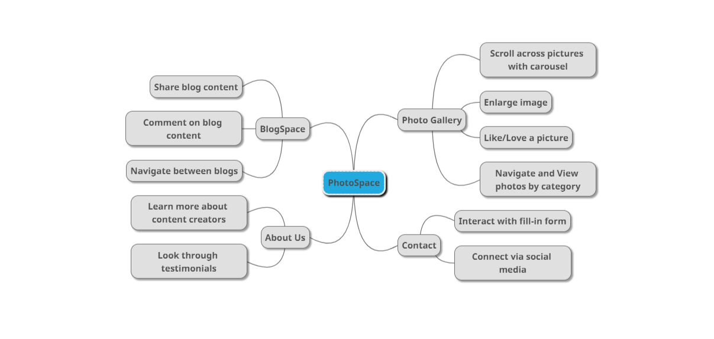
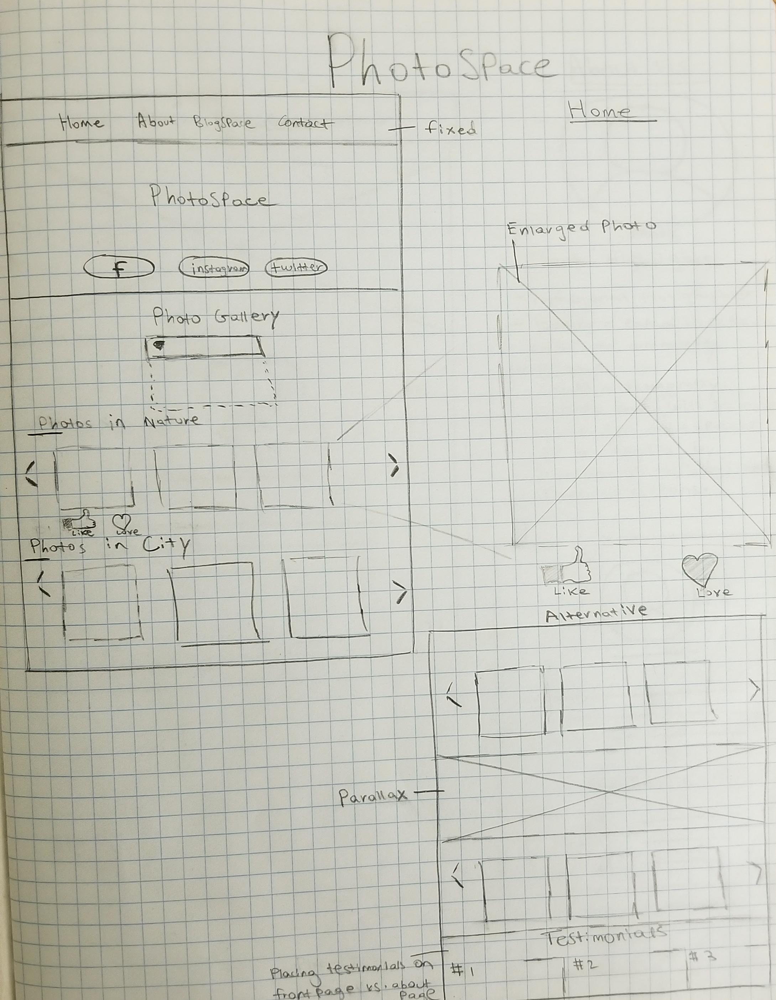
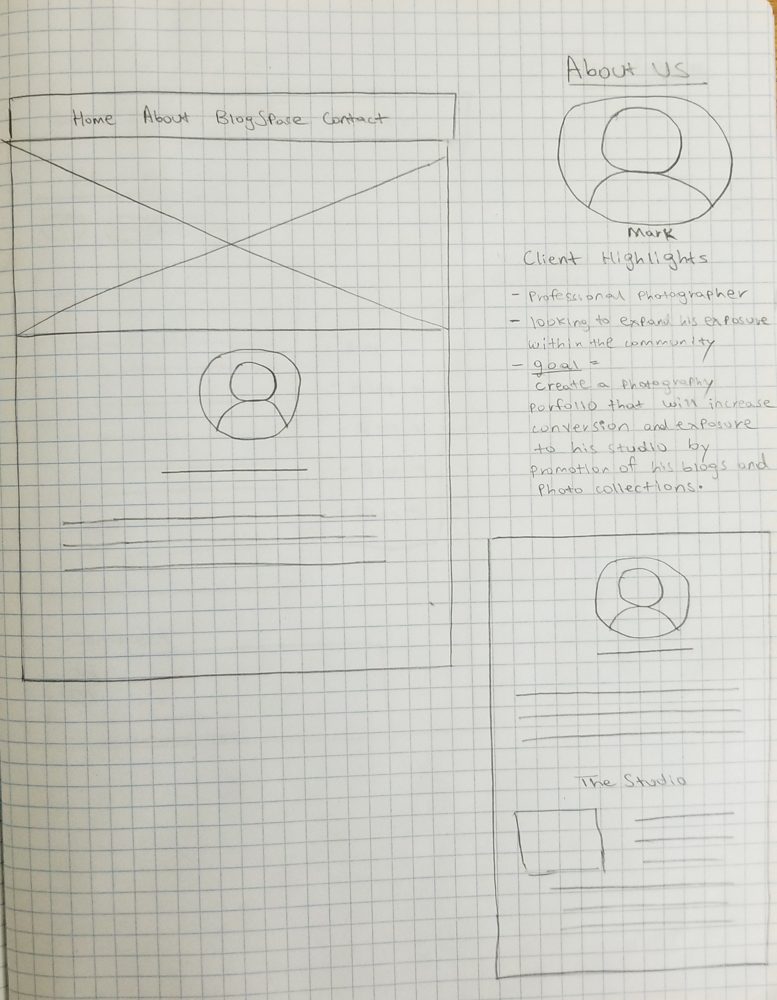
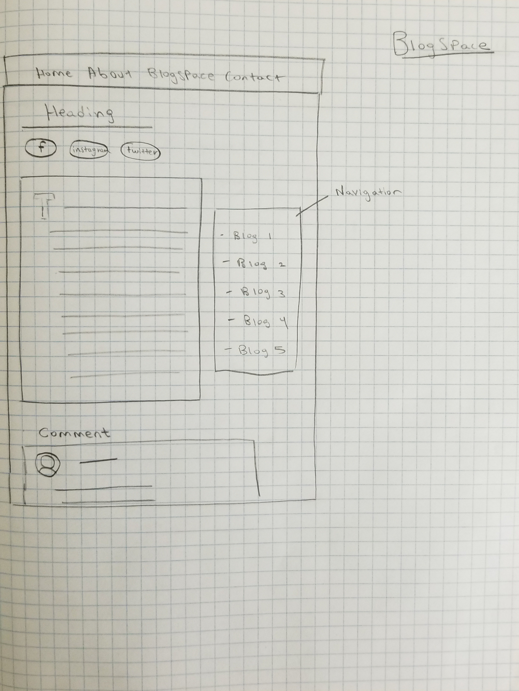
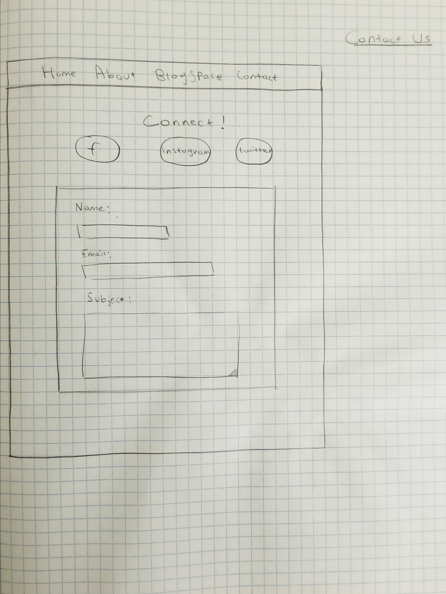

User Persona and Problem Finding
Meet Greg. Greg is a professional photographer with a small business called PhotoSpace. He is interested in growing the small business but needs greater exposure. The photographer wants a simple set of web pages to showcase his photography skills and his passion for this field through the blog articles he writes. Greg emphasizes that internet users see his established reputation in town. The photographer also wants users to stay on the portfolio website for as long as possible. The goal throughout this initiative is to increase client conversions and traffic to the business all while delivering a platform to host Greg’s photography portfolio.
- Requires a website to showcase photograph portfolio and relevant work
- Relavent work must be assigned to different pages
- Necessary Elements include:
- Photo Collection
- Blog Entry
- Testimonials
- Contact Information
- Business Location
Mindmap
The Sketches
   Wireframes


Coding the Designs
The primary goal prior to beginning the programming phase was to understand the elements that are represented in my wireframes. The UI must be simplistic and intuitive, and I decided that sacrifices must be made to make sure I did not step out of my performance and requirement bounds. For example, I had initially wanted to include a carousel to every page, but page load began to wane with every plugin that was included. Various layouts had to be implemented to test whether the user can access all aspects of the website in as little clicks as possible. The website features a photo collection and testimonials on the front page. To fixate the attention of the internet user to the photographer’s content, there is an element that utilizes an email list to provide access to the BlogSpace with ease. Not all aspects of the initial mindmap, howver, made it to this step. I decided that the ability to like/love a picture is not conducive to the main purpose of PhotoSpace. If the user wishes to interact with the website, PhotoSpace offers a light blogging medium and comments area to maintain engagement. I have managed to connect to the Google Maps JavaScript API to present the user with an option to further connect with the business. A contact page is also present along with different social media links to emphasize accessibility for every web page. The BlogSpace is a medium for the business to provide commentary on photography and another opportunity to connect with clients through the commenting system. The page can allow the photographer to establish meaningful relationships with existing clients as part of the PhotoSpace brand.